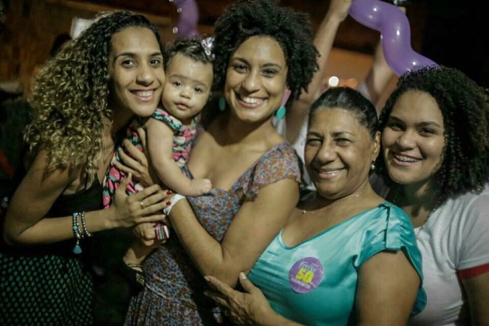

Marielle Francisco da Silva, Mulher, Negra, Feminista e da Favela.
Formada em Sociologia (pela PUC-Rio) e com Mestrado em Administração Pública (pela UFF).
Marielle foi eleita Vereadora do Rio de Janeiro pelo PSOL no ano de 2016.
Morreu com quatro tiros na cabeça, após seu carro ser alvejado na região central da cidade na noite do dia
14 de março de 2018.
“Ser mulher negra é resistir e sobreviver o tempo todo”, em entrevista ao Brasil de Fato durante a jornada
de lutas das mulheres, em 2017.
História
Marielle Francisco da Silva, conhecida como Marielle Franco, Vereadora pelo PSOL, era um nome pouco
conhecido a nivel nacional, até que dia 14 de março de 2018 foi vitima de uma execução.
Nasceu em 27 de julho de 1979 no Rio de janeiro, nasceu e cresceu em uma favela do Complexo da Maré, é cria
da Maré, filha de Marinete e Antônio, aos 11 anos começou a trabalhar junto dos pais. Teve uma breve
passagem na equipe do Furacão 2000, gravadora de shows de funk.
Em 1998 teve sua única filha Luyara Franco e nesse mesmo ano começou a fazer um cursinho pré-vestibular.
Em 2002 ingressou no curso de graduação em ciências sociais da PUC-Rio com bolsa integral (Prouni). Após a
graduação, Marielle ingressou no mestrado de Administração Pública da Universidade Federal Fluminense (UFF).
A sua dissertação, defendida em 2014, focava na atuação das UPPs (Unidade de Polícia Pacificadora) e tecia
uma análise da política de Segurança Pública do Estado do Rio de Janeiro.
Marielle era casada com Monica Tereza Benício e juntas lutavam pela causa LGBT.

“As rosas da resistência nascem no asfalto. A gente recebe rosas, mas vamos estar com o punho cerrado
falando de nossa existência contra os mandos e desmandos que afetam nossas vidas”
Vida Política
Uma tragédia pessoal marcou a vida de Marielle. Sua melhor amiga morreu após ser atingida por uma bala
perdida em um confronto entre policiais e traficantes da Maré, após essa morte Marielle resolveu se dedicar à
militância, criticou duramente os abusos de poder das forças policiais.
Marielle integrou em 2006 a equipe da Comunidade da Maré que fez campanha para o deputado Marcelo Freixo,
padrinho político de Marielle.
Ela veio se eleger em 2016 para a Câmara dos Vereadores do Rio de Janeiro pelo PSOL com 46.502 votos, a quinta
vereadora mais bem votada. Presidiu a Comissão da Mulher na Câmara.
Marielle e Marcelo Freixo coordenaram juntos a Comissão de Defesa dos Direitos Humanos e Cidadania da
Assembleia Legislativa do Rio de Janeiro.
Apresentou 16 projetos de lei, principalmente pensados em políticas públicas para negros, mulheres e LGBTIA+.
“Quantos mais vão precisar morrer para que essa guerra acabe?”
Direitos Autorais
Assassinato
Dia 14 de março de 2018, voltando de um evento realizado na Casa das Pretas, o carro onde Marielle, sua
assessora Fernanda Chavez e o motorista Anderson Pedro estavam foi subitamente alvejados, Marielle e Anderson
não resistiram e morreram, sua assessora ficou levemente ferida. Sua morte gerou grande revolta, grandes
manifestações nas ruas pelo Brasil e no mundo.